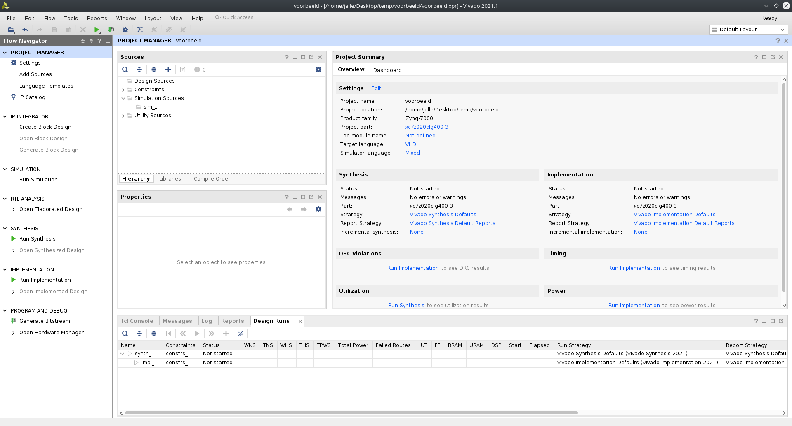

Eerste project
Maak een project
We starten met een eerste vivado project maken. We beginnen natuurlijk met vivado op te starten en te klikken op create project. Je geeft het project een naam en zorgt dat je het op een plaats zet waar je het nog kan terugvinden. Bij project type zeggen we RTL project en vinken we “Do not specify sources at this time” aan.
De volgende keuze die gemaakt moet worden is het type van FPGA. Als part maakt het niet veel uit wat we kiezen. Het beste is om een FPGA te kiezen die gratis is te gebruiken met Vivado zoals de xc7z020.
Let er op dat je in het pad naar je Vivado project geen spaties hebt!! Dus, geen paden zoals “C:\school\2e jaar\disch” of “C:\mijn documenten\demo”
Nu krijgen we een omgeving die er zo uit ziet. 
Voeg HDL code toe
Na het maken van een project, kunnen we HDL code toevoegen. Dit kan via de link add sources. Vervolgens komt er een keuze om een nieuw bestand te maken of om een reeds bestaande file toe te voegen. Kies voor een nieuwe file en voeg een vhdl design source toe. De tool vraagt vervolgens voor I/O port definitions, die kan je al instellen bij het maken van de vhdl file, maar kunnen later ook nog aangepast worden in de code.
Merk op dat Vivado al een kleine aanzet geeft om van te beginnen. Onderstaande VHDL-code geeft een beschrijving zorgt voor een invertor die, zoals verwacht, de ingang geïnverteerd doorgeeft aan de uitgang.
library IEEE;
use IEEE.STD_LOGIC_1164.ALL;
entity invertor is
Port (
A: in std_logic;
Z: out std_logic
);
end invertor;
architecture Behavioral of invertor is
begin
Z <= NOT A;
end Behavioral;Dit is een eenvoudige VHDL beschrijving en we zullen deze in detail onder de loep nemen.
entity invertor is
Port (
A: in std_logic;
Z: out std_logic
);
end invertor;De entity definieert de input en de outputs van het (sub-)design dat we beschrijven. Het design heeft als naam gekregen: invertor. Vervolgens zien in de lijst van poorten dat deze component 2 poorten heeft: een ingang A en een uitgang Z.
Deze component is dus een IC met twee pinnen en de entity blok omschrijft als het ware enkel de behuizing.
De tweede blok architecture beschrijft wat er IN de behuizing zit. Ook deze beschrijving kunnen we een naam geven: Behavioural. Alles wat er vervolgens beschreven wordt tussen de begin en end definieert het gedrag van de component.
architecture Behavioral of invertor is
begin
Z <= NOT A;
end Behavioral;library IEEE;
use IEEE.STD_LOGIC_1164.ALL;Tenslotte zijn er nog de eerste twee regels van de beschrijving. De eerste regel zegt dat er een library genaamd IEEE gebruikt wordt in deze component. De tweede regel zegt dat er uit deze library de package STD_LOGIC_1164 volledig (.ALL) gebruikt wordt. Wat dit precies wilt zeggen daar wordt later op teruggekomen.
Het is uitermate belangrijk dat het besef blijft dat VHDL (of iedere andere HDL) louter een beschrijving geeft van een hardware design. Dit wilt zeggen dat het mogelijk moet zijn een schema te tekenen !!!
De beschrijving van de de component hierboven is in een schema te tekenen als een invertor of NIET-poort.

NOT gate
std_logic
Omdat we de package IEEE.STD_LOGIC_1164 gebruiken kunnen we het typen std_logic gebruiken. Dit is het type dat we meestal gebruiken wanneer we met signalen werken in een hardware beschrijving. std_logic kan 9 verschillende waardes aannemen. Meestal gebruiken we ‘0’ en ‘1’. Hieronder zijn de mogellijke waardes opgelijst met uitleg. Meer uitleg over mogelijke types vindt je in de zelfstudie.
'U', -- Uninitialized : flipflop waar nog nooit in is geschreven
'X', -- Forcing Unknown
'0', -- Forcing 0 : rechtstreeks aan grond
'1', -- Forcing 1 : rechtstreeks aan voeding
'Z', -- High Impedance
'W', -- Weak Unknown
'L', -- Weak 0 : via weerstand aan grond
'H', -- Weak 1 : via weerstand aan voeding
'-', -- Don't Care